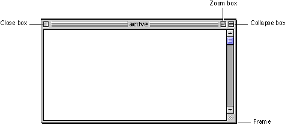

Document Windows
Document windows have standard structural components. These components include the title bar, size box, close box, collapse box, zoom box, and scroll bars. Figure 5-3 shows the structural components of standard document windows.Figure 5-3 Structural components of standard document windows
